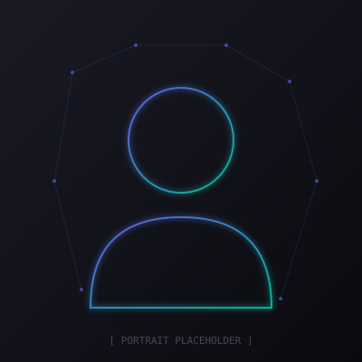
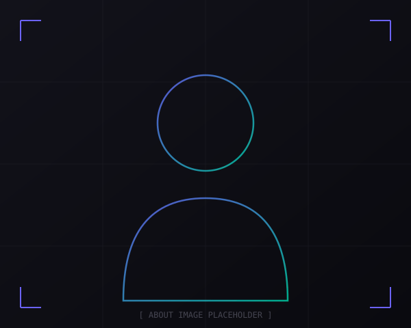

Graph-Based Bankruptcy Prediction
Modeled corporate failure risk via Node2Vec embeddings on inter-firm networks. Evaluated structural impact of graph topology on predictive performance.
PythonNode2VecGraph MLScikit-learn

Hello, I'm
AI & Machine Learning Engineer
Designing end-to-end AI systems — from data ingestion to deployment

Final-year Master's student in Artificial Intelligence and Data Science at FST Tanger, with a strong foundation spanning machine learning engineering, data infrastructure, distributed systems, optimization, and applied AI.
My approach is strongly oriented toward end-to-end system design — I design and implement the full lifecycle of AI solutions, from data ingestion and preprocessing to model integration, deployment, and decision support interfaces.
My work places me closer to ML engineering and applied AI systems development than to isolated model experimentation.
Tangier, Morocco
MSc AI & Data Science
Arabic, French, English
Top 3 — Master's Cohort
Modeled corporate failure risk via Node2Vec embeddings on inter-firm networks. Evaluated structural impact of graph topology on predictive performance.
Implemented Graph Neural Networks to detect malicious activity on IoT network traffic. Comparative analysis of message-passing vs. classical baselines.
Multimodal search engine combining visual descriptors and view-based 3D representations. Optimized vector similarity search using FAISS indexing.
CNN for automated pneumonia detection on chest X-rays achieving 92% accuracy. Integrated Grad-CAM for clinical interpretability.
Full-stack web platform enabling no-code ML model creation and deployment, reducing development time by 60%. Real-time training visualization.
Big Data pipeline for real-time sentiment analysis on Amazon review streams. Sub-2-second per-message latency with MLlib-based distributed ML.
JADE-based multi-agent diagnostic system achieving 85% accuracy. Integrated Fuzzy C-Means clustering and Naive Bayes classification.
End-to-end BI solution: SQL Server to Power BI via SSIS ETL pipelines, DAX-based KPI development, and interactive dashboards.
Complete decision tree classifier in pure Python. Shannon entropy, information gain, automatic optimal split point detection. Tested on Titanic dataset.
Distributed architecture integrating Spark, Mesos, Akka, Cassandra, and Kafka. Real-time streaming, distributed computation, and event-driven processing.
Rank: Top 3
Deep & Transfer Learning, Distributed Systems & Big Data, Multi-Agent Systems & NLP, Cloud & Edge Computing, Blockchain & Security
Rank: Top 10
Data Analysis & Mining, Data Engineering, Advanced Algorithms, Web Development, Systems & Networks
Real Analysis, Linear Algebra, Algorithmics, Data Structures in C, Physics, Chemistry
Mention Tres Bien — Top 5
Interested in collaborating or have an opportunity? Let's connect.